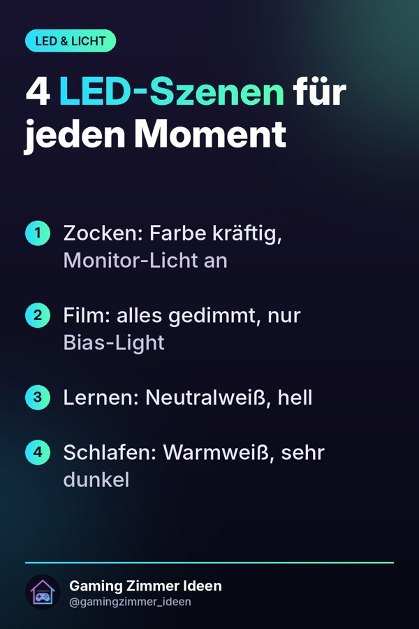

Ideen › LED Beleuchtung Gaming Zimmer
4 LED-Szenen für jeden Moment: Zocken, Film, Lernen und Schlafen

Stell dir in der LED-App vier Szenen ein: Zocken mit kräftigen Farben, Film mit gedimmtem Licht und nur Bias-Light, Lernen mit hellem Neutralweiß und Schlafen mit sehr dunklem Warmweiß. So passt das Licht in deinem Gaming-Zimmer immer zum Moment.
Auf einen Blick
- Zocken: Farbe kräftig, Monitor-Licht an
- Film: alles gedimmt, nur Bias-Light
- Lernen: Neutralweiß, hell
- Schlafen: Warmweiß, sehr dunkel
Tipp: Viele Apps lassen sich mit einem Sprachassistenten verbinden – dann wechselst du die Szene einfach per Sprachbefehl.